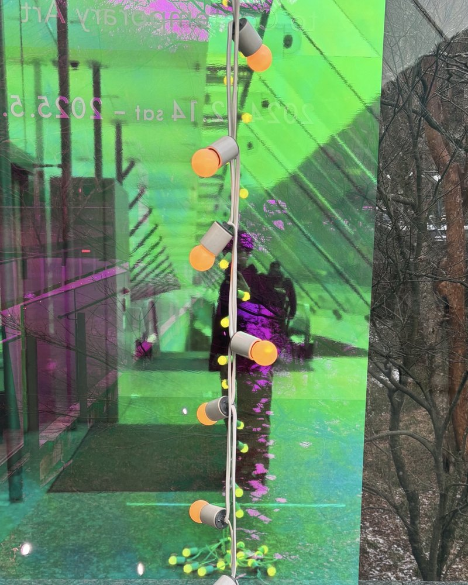
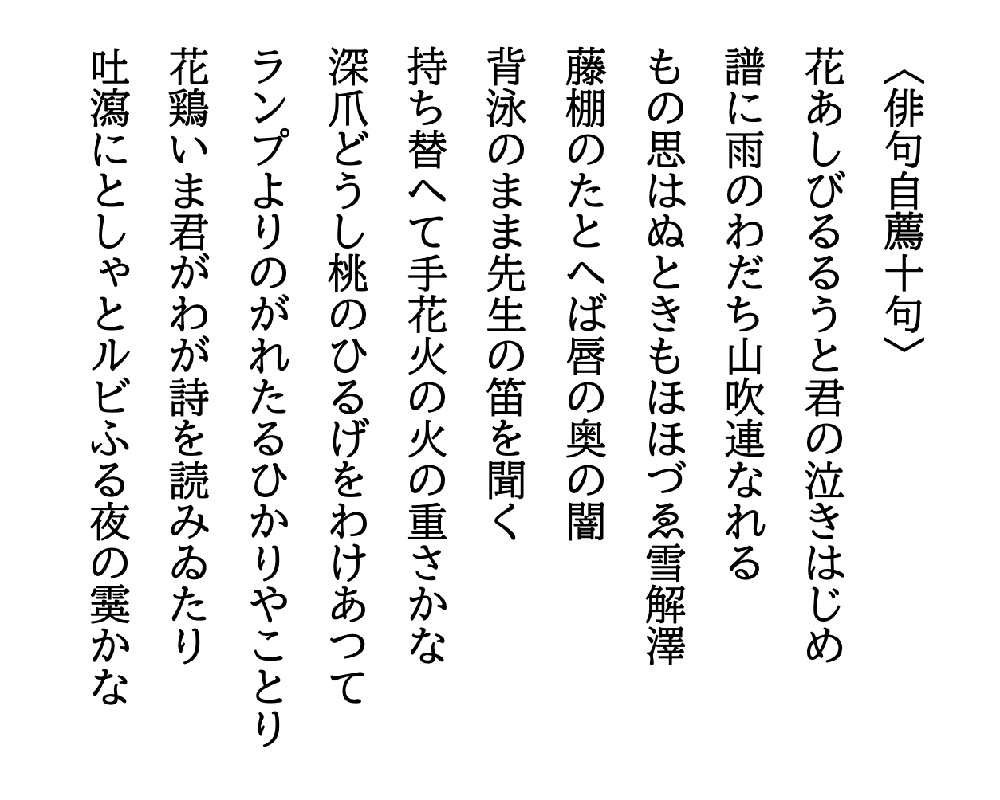
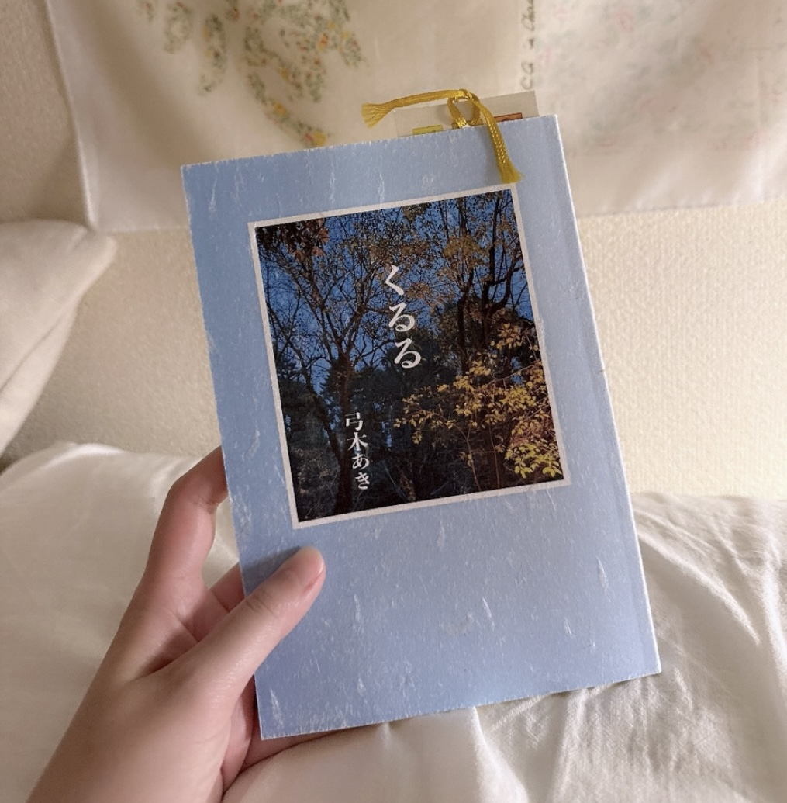
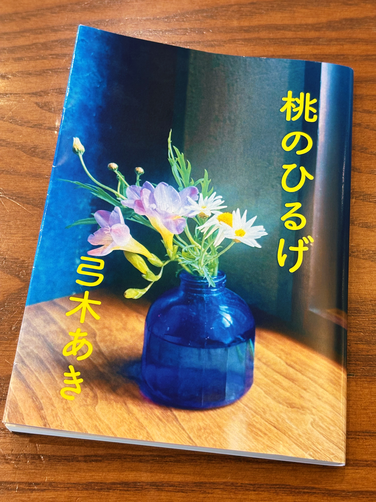

Yumiki Aki
ランプよりのがれたるひかりやことり
俳人・作家。
1999年生まれ、牡羊座。
照明と近代建築と季節の果物が好き。
俳句雑誌「noi」誌友、「noist 2025」に選出。
第一回京都俳句賞にて、岩田奎賞を受賞。


花あしびるるうと君の泣きはじめ
譜に雨のわだち山吹連なれる
もの思はぬときもほほづゑ雪解澤
藤棚のたとへば唇の奥の闇
背泳のまま先生の笛を聞く
持ち替へて手花火の火の重さかな
深爪どうし桃のひるげをわけあつて
ランプよりのがれたるひかりやことり
花鶏いま君がわが詩を読みゐたり
吐瀉にとしゃとルビふる夜の霙かな

2025年 ／ むじな発行所
第一句集。錠剤のまあるい眠り、サンキャッチャーが散らす虹のかけら、号泣のあとに届く光。名づけきらず、問い直し、まなざし、祈る。その態度のまま四季をくぐり抜けた記録です。エッセイ「まなざす｜the gift of witnessing」も収録。

2026年 ／ 私家版
名前のつけられない関係と、ばらばらにやってくるしあわせをめぐる連作短編小説集。バスの遅延、ビリヤニを混ぜる銀のスプーン、冬の夜のパピコ、二つの赤い椅子。食べること、見ること、景色を覚えていること。それだけでじゅうぶんだという発見が、全篇をたしかに貫く。
ままならない日々のなかで、暮らすことを、ひとつずつ、なおしてみる。花を買う。眠る。歩く。本を読む。誰かと話す。休むことと暮らすことのあいだで見つけた小さなことを書き留めるエッセイ連載。 noteにて更新。
掲載情報
弓木あきが読む。
夜焚火に金色の崖峙てり
冬の夜の闇と、焚火の立ち上がる炎。崖の岩肌がその炎に照らされ、金色の壁となって現出する。
鮮烈なのは、「峙てり」という結びだ。「峙つ」という力強い動詞の選択。そして、動作や作用が持続しているさまを表す助動詞「り」。こうした文語の措辞により、「金色の崖」という神聖で幻想的な光景は、読み終えたあともなお読者の眼裏に屹立し続ける。
色彩について考えるたび、炎ほど豊かな表情をもつ物質は、他にないのではないかと心奪われてしまう。掲句の場合、炎そのものの色ではなく、照らされた崖の金色を言い当てることで、かえって炎の様相を想像させている。
水原秋桜子『葛飾』（昭和五年、馬酔木発行所）より。
2026年6月8日 弓木あき
弓木あきが読む。
明滅の滅を力に蛍飛ぶ
「蛍」の本質を「滅」、つまり光の消えている時間に見ているという逆説が美しい。また、光が消えた次の瞬間にまた灯る蛍の様子を、「滅を力に」とする把握。ここには、光ることで飛ぶのではなく、消えることで飛ぶのだという、生への深い洞察がある。
「明滅」という熟語を解体したうえで、「滅」に生のエネルギーを見出し、さらに「蛍飛ぶ」という具体的な動作に着地させた手腕。
正木浩一『正木浩一句集』（1993年、深夜叢書社）より。
2026年6月9日 弓木あき
弓木あきが読む。
水を吸ふ凍蝶に紋ありにけり
すっかりと弱った冬の蝶が、もうほとんど死に近い存在となりながら、それでも水を吸っている。
「ありにけり」は、たったいま気がついた、という発見の詠嘆だ。衰弱したものと見ていた凍蝶だが、ふと目を凝らせば、翅に紋がある。死の側へ傾いていた存在が、にわかに紋という固有性をもって立ち現れてくる。
生命がぎりぎりのところにあるとき、かえって存在の細部があらわになるという逆説の一句。凍えた生命のなかに、それでもなお消えない紋様を見ている。
大木あまり『星涼』（2010年、ふらんす堂）より。
2026年6月9日 弓木あき
弓木あきが読む。
をちこちに光逃がして花火かな
「をちこちに光逃がして」という上五中七は、花火がただ光っているというよりも、光が散らばってゆく様子の描写に近い。まるで、花火が抱えていた光を手放しているかのよう。また、動詞「逃がす」には、自由や解放のニュアンスが含まれている。つまり、花火が光を夜空へ解き放つ、という動的な光景として把握されているのだ。
加えて、下五「花火かな」の詠嘆の着地も見事だ。まず夜空に光が放たれる光景を見て、「逃がす」かのように感じ、それが最後に「花火であった」と気づく。こうした発見のプロセスを、読者も追体験することができる。
花火を「光を逃がすもの」として捉え直したところ、そして巧みな構造に、この句の凄みがある。
野口る理『しやりり』（2013年、ふらんす堂）より。
2026年6月10日 弓木あき
弓木あきが読む。
風船をもらひしよりの手の弾み
風船を手にした瞬間から、手はただの手ではなくなる。風船に引っ張られ、揺らされ、浮き立つものになる。ここで弾んでいるのは風船でもあり、手でもあり、そして同時に心でもある。
掲句は風船の色や、もらった側の表情を一切描いていない。しかし「手の弾み」という一語だけで、それらをすべて想像させてしまう。風船を得たあとの身体の変化だけを描くことで、むしろ喜びの全体が見えてくる。
また、「もらひしよりの」という中七が一句の核だ。受け取ったその瞬間から今に至るまで持続している、うれしさや胸の高鳴り。風船をもらった一瞬の喜びではなく、歩きながら、手に持ちながら、まだ続いている弾み。その時間感覚が、この句を生き生きとさせている。
杉山久子『栞』（2023年、朔出版）より。
2026年6月11日 弓木あき
弓木あきが読む。
雲を押す風見えてゐる網戸かな
「雲を押す風」という把握がまず大きい。風そのものは見えないはずなのに、雲が動くことで、風が空を押しているように見える。ここでは、見えないものが、動かされるものを通して可視化されている。
そして下五の「網戸かな」。空の雲を見ているはずなのに、最後に視線は眼前の網戸へ戻ってくる。遠景の雲と、近景の網戸。そのあいだに風が通っている。網戸は視覚を遮る膜ではなく、外と内とをつなぐ触覚の境界なのだ。
掲句の魅力は、広い空の運動を、網戸という身近な生活の一点から身体に結びつけているところだ。雲を押すほど大きな風が、網戸を隔てたこちら側にも来ている。夏の家の中で、遠い空と自分の身体とが、「風」によってつながる。
生駒大祐『水界園丁』（2019年、港の人）より。
2026年6月12日 弓木あき
弓木あきが読む。
まぶしさの鶴おちてくる北は紺
感覚の飛躍に満ちた一句である。
まず、「まぶしさの鶴」という把握が美しい。鶴そのものだけではなく、空の高みから降りてくる光までを見ている。そして、鶴の飛ぶさまを「おちてくる」という語で捉え、言い当てた。その結果、高い空から地上へ近づいてくるときの垂直的な運動がより強調され、まるで一塊になった光が空から降下してくるような印象を与える。
さらに「北は紺」の着地も見事だ。鶴のまぶしい白さと北空の紺色の対比により、冬の澄んだ空気感がありありと想起される。
宇多喜代子『りらの木』（1980年、草苑発行所）より。
2026年6月13日 弓木あき
弓木あきが読む。
君といつか杖を突きゆく花野かな
あかるさのなかに、はかなく淋しい予感を抱かせる一句。
「君と」が句の最もはじめに置かれることで、その三音に込めた切実さが痛いほどに伝わる。しかし、それはいま現在の約束ではなく、遠く不確実な未来への祈りとしての「いつか」である。しかも「杖を突きゆく」ほどの未来だ。身体が衰えても、たとえゆっくりとでも、「君」と一緒に歩みたいという願いは具体的な生の実感と不安感とをともなう。
また秋の季語「花野」は華やかでありながら、どこか冬へ、喪失や終末へと向かっていくようなほのかな淋しさを含意する。まるで、ふたりの時間の盛りと衰えを同時に象徴しているかのようだ。
「君」と隣にいるいまは、決して永遠には続かない。しかし、書くことで「いま」は未来へと引き伸ばされる。一句のなかで、現在の並び立つふたりと、「いつか」の杖を突くふたりが二重写しになる。広大な花野は、そのあいだに横たわる長い歳月そのものではないか。
藤井あかり『メゾティント』（2024年、ふらんす堂）より。
2026年6月14日 弓木あき
弓木あきが読む。
春風にからだほどけてゆく紐か
印象的なのは「からだほどけてゆく」という措辞。長い冬の寒さにかたく強ばっていた身体が、春の風を受けて、すこしずつ緩んでゆく。「ほどける」という語が、まるで結ばれていたものが解かれてゆくような、こわばりから解放されてゆくような身体の感覚を、的確に言い当てている。またひらがなによる表記も、やわらかさや解放の気配を濃く感じさせる。
そして「紐か」という問いかけによる結び。ほどけてゆく身体はここで「紐」の運動に見立てられる。しかも、からだが紐のようだと言い切るのではなく、まるで紐だろうか、とそっと着地する。その認識の淡さが、春風にぼんやりと身を委ねているときの、まどろむような心地と響く。
冬から春へ。かたく強ばっていたものが緩み、ぎゅっと結ばれていたものがほどけてゆく。そのさまを、「からだほどけてゆく」という身体感覚と、「紐」という見立てとで掬い取っている。季節の移ろいが、ひとすじの紐のほどけるさまへと幻想的に異化されている。
田中裕明『櫻姫譚』（2002年、邑林書）より。
2026年6月18日 弓木あき
弓木あきが読む。
ブルーデージーこころにさきがけて涙
「ブルーデージー」の「ブルー」が、開幕から一句のトーンを決定づける。青い花弁の可憐さ。これは明るくて、そして透明な青だ。だからこの涙も、おそらく激しい慟哭というよりは、自分でも理由がまだわからないままに、ふとこぼれてしまう涙に見える。
花の名前が置かれた直後、「こころにさきがけて」「涙」という句またがりのフレーズが来る。悲しいから泣く、感動したから涙が出る、というように心情が先にあって、その結果として涙が流れるのが一般的なロジックだ。しかし、この句では順序が逆だ。感情として把握される前に、身体が反応している。まるでこぼれる涙のほうが、心よりも早く何かを知っているかのようだ。
一句の白眉は、マルチモダリティ論的な仮名／漢字の選択やそのレイアウト、画面構成にある。つまり、文字種の選択と、その視覚的な配置だ。「ブルーデージー」というカタカナからはじまり、「こころにさきがけて」というすべてひらがなに開かれたフレーズ。そして結びの「涙」の一字だけが漢字という構成。相対的に表意文字であり最後にくる「涙」に重心がかかるため、ついにこぼれてしまうものとしての「涙」の重み、実感、切実さがよりつよく読者に訴えかけてくる。
また「さきがけて」には、「先駆けて」に加え「咲き」の音もかすかに響く。ブルーデージーが咲くことと、涙が心に先んじて現れることが、音の上でもそっとつながっている。
俳句雑誌「noi vol.4」より。
2026年6月19日 弓木あき
弓木あきが読む。
雨いつか雪へとあやとりのはしご
「雨いつか雪へと」が美しい。空から降る雨粒が、いつのまにか雪片になる。水滴の落下から舞い落ちる白い欠片へ、その変化は瞬間的ではなく、「いつか」というべき時間の幅と曖昧さをもつ。古典的でありながらも、そこには決して色褪せない情感がある。
しかし、そこへ「あやとりのはしご」が来たことで、この一句は特別な手ざわりを得た。「あやとり」の「はしご」は、糸を指にかけて作られた細い線の連なりを指す。空から降る雨や雪と、指にかかった糸の線とが、身体感覚のうえで重なり合う。まるで、雨は縦に張る糸であり、雪は空中で次の行き先を探す糸のよう。気象の変化が、手遊びの次元へと引き寄せられている。句またがりのリズムも、糸を手繰る手つきに似て巧みだ。
「はしご」もここでは単なる二物衝撃の小道具ではなく、それ自体が意味を働かせている。梯子は上と下とをつなぐもの。天から地上へ、そして外の世界から室内の記憶へ。その境界に、「あやとりのはしご」がささやかに渡っている。
佐藤文香『海藻標本』（2008年、ふらんす堂）より。
2026年6月19日 弓木あき
弓木あきが読む。
祈つてゐる時間がぼんやりと寒い
「祈つてゐる」の「てゐる」は、進行・持続のアスペクトを表す。つまり描かれるのは「祈った」時間ではなく、「祈っている」時間なのだ。祈りが終わってから過去を回想しているのではなく、祈りのただなかにある「いま・ここ」の感覚が捉えられている。ここで重要なのは、祈りの内容や成就ではなく、祈りつづけている最中の、出口の見えない暗闇に似た感覚だ。祈りは未来の一点へと向かう行為のはずだが、「てゐる」という持続のアスペクトで示されたことにより、この祈りは目的へ到達することなく、一句の時間の中に永く滞留し続ける。
そして、客体化された主語「時間」を受けるのは、「ぼんやりと」という把握だ。祈っているあいだの意識のにじみや、あるいは救いを信じきれない感覚。輪郭をもつ対象を明晰に描くのではなく、目に見えない「時間」を「ぼんやりと」と捉えることで、祈りという行為のもつある種の不確かさがあらわになる。寒さの所在は身体から離れ、曖昧なまま世界へと拡張される。この感覚のずれが、祈り続けるうちに意識が少しずつ遠のいていく状態をよく表しているのではないか。
また「寒い」の口語終止形が鋭い。言い切ることで、句はそこでぱたりと止まってしまう。詠嘆の切れ字によって劇的に描くのではなく、「寒い」という現在の感覚をそのままに差し出した。祈っている時間がただ寒い。その救われなさ、説明されなさは、平明な口語の終止形によってより一層切実さを増している。
大塚凱『或』（2025年、ふらんす堂）より。
2026年6月20日 弓木あき
弓木あきが読む。
星だかゆめだかわからないもの.+:ﾟ+｡ .ﾟ･..みえている、？ わすればな
「星だかゆめだかわからないもの」という口語のフレーズが、一句の認識の揺れを開幕から宣言する。見えているものは外界の星なのか、内面の夢なのか、あるいはそのどちらにも属さないものなのか。掲句はその判別のつかなさを、説明によって解決してはくれない（いじわる？）。
直後に置かれた記号列「.+:ﾟ+｡ .ﾟ･..」は、この句の視覚的特徴である。これは単なる装飾ではなく、「星だかゆめだかわからないもの」を、文字列の上に実際に発生させる仕掛けだろう。「星」は、こうした記号の散らばりによって視覚的にもきらめいている。まるで星屑のようでもあり、夢世界の粒子のようでもある。
また、「みえている、？」という表記も印象的だ。「みえている」と言いながら、そのあとには読点と疑問符が置かれる。見えている、しかし本当に見えているのだろうか。これは星なのか、夢なのか。はたまたただの記号列なのか。「、？」という不安定な句読点の並びには、「みえている」ものの不確かさや、対象を既存の名や分類へ回収しない姿勢がある。
下五（？）「わすればな」について、漢字で「忘れ花」と書かず「わすればな」とひらがなに開くことで、季語としての輪郭はいくらかやわらぎ、「わすれ」という記憶の作用と、「はな」というはかない音が前景化する。忘れ花は、小春日和に咲いてしまう（春の）花。「星だかゆめだかわからないもの」もまた、現実の時間や認識の秩序から外れて、不意にあらわれてきたものだろうか。唯一の漢字＝表意文字である「星」の硬い輪郭とひそかに対応している。
「〜だか〜だか」のリフレイン、口語、記号列、ひらがなへの開き、問いかけ、季語の選択は、ばらばらな意匠として置かれているわけではない。それらはすべて、「わからないもの」をわからないままに提示するために機能している。本来そこにないはずのものが見えてしまう瞬間を、俳句形式の更新とともに描き出している。
おおにしなお「だれかの手帖、よんでるみたいに」（2026年、俳句ネットプリント「みつゆ」）より。
2026年6月21日 弓木あき
弓木あきが読む。
どこにゐても虹を教へてあげるから
一読して明るい句なのに、なぜか泣きそうになってしまう。
まず「どこにゐても」という歌いだしから、読み手は多くを想像してしまう。これは「あなたがどこにいても」とも、「わたしがどこにいても」とも読める。遠く離れた場所にいるのかもしれないし、もう二度と簡単には会えない境遇なのかもしれない。ふたりの所在が曖昧なままに開かれているからこそ、一句は時間や距離を越えた「わたし」から「あなた」への切実でやさしい呼びかけになる。
また「教へてあげるから」の口語には、親しさが感じられる。幼い子どもへ言うようでもあり、恋人や大切な友人へ向けた口約束のようでもある。そして「あげるから」は単にやさしいだけでなく、切実な何かを帯びている。虹はすぐに消えてしまうものだから、見つけたらすぐに「あなた」に教えたいのだろうか。その一瞬の美しさを、「あなた」と分け合いたいのだろうか。
「虹」は夏の季語だが、掲句ではただ空にかかる気象現象としてではなく、離れた場所同士をつなぐものとして機能している。どこにいても、「わたし」は何度でも虹を見つけるだろう。そしてその虹の存在を「あなた」に教えることで、ふたりのあいだには、はかなくもたしかな橋がかかるのだ。
そして「から」以後の省略が効いている。「教へてあげるから」のあとには、本来の発話であれば何か言葉が続くはず。だから大丈夫、だから忘れないで、だから泣かないで、だから生きていて。しかしそうした言葉は省かれたままに句は閉じる。「から」の未完が、読み手の想像の余白を作り出している。
なぜ泣きそうになってしまうのか。それは、その美しさを共有したい「あなた」とのあいだに、どうしようもない距離の気配があるからだ。そして、それでも手を伸ばしつづけようという、「わたし」の切実な意思を感じるからだ。
藤井あかり『メゾティント』（2024年、ふらんす堂）より。
2026年6月22日 弓木あき
弓木あきが読む。
芹つむや光あそべる橋の裏
芹を摘む動作には、春の水際へ身をかがめ、手を伸ばす豊かな身体感覚がある。「芹つむや」と切れたあと、視線はその低さのままに「橋の裏」へと移る。
橋の裏は本来、暗い場所であろう。しかし、ここでは春の水に反射した光が差し込み、そこを「光あそべる」空間へと変えている。「あそべる」という表現は、存続の助動詞の働きにより、光が遊んでいる状態がいままさに持続していることを感じさせる。静かな一条の明るさではなく、水面に揺れながら、ちらちらと橋裏に戯れるような動的な光の姿が見えてくる。
芹を摘むために身を低くしたからこそ、ふだんなら見過ごしてしまう橋の裏の光に気づいた。春は野や空だけにあるのではない。水際、その橋の裏側にまで届いている。そうした日常の発見を、たしかな措辞で結んだ一句だ。
正木浩一『槇』（1989年、ふらんす堂）より。
2026年6月25日 弓木あき
弓木あきが読む。
極月の鯊を釣るてふ煙草に火
極月、寒さもいよいよ深まる時期に、秋の季語である鯊（ハゼ）を釣ろうというズレが可笑しい。年末の華やいだムードや慌ただしさから離れ、冷えた水辺で竿を出そうとする、物好きで少し気取った人物の姿が浮かぶ。酔狂さ、寒さへの鈍感さ、そうした面も見えてくる。
ここで効いているのが「てふ」である。「鯊を釣るという」その行為には、どこか伝聞めいた距離が生まれている。果たしてほんとうに釣れるのか。でもなぜか自信がありそうだ。
下五「煙草に火」によって、一句に具体の手ざわりがともる。しかも「火をつける」と言わず「煙草に火」と止めることで、その行為は完了しきらず、火をつけようとする、まさにその瞬間だけが浮かぶ。この強調された余白からは、釣果よりも、釣る前の間、あるいは釣りながら待つ時間のほうが濃く立ち上がってくる。
極月の寒さの中で鯊を釣るという、季節外れで物好きな行為と、煙草に火をつけようとする仕草。その取り合わせが、孤独でありながら妙に満ち足りた時間を作り出している。
……とここまで書いてから、「落ちハゼ」という語を知った。冬の時期は脂が乗っており、より大きな個体が釣れやすいという。物好きだと思っていた釣り人は、実は経験を積んだ釣り人だったのかもしれない。「煙草に火」も、格好つけているのではなく、「今日は釣れる」という確信を持った釣り人の、ごく自然な所作だったのではないか。なんだかしてやられた気分だ。
依光陽子『ふ、は鳥に』（2026年、左右社）より。
2026年6月27日 弓木あき
弓木あきが読む。
うすらひの端は水とも光とも
描かれるのは、薄氷の「端」という小さな境界。そこには、水の世界に冬の名残が戻ってくる気配と、同時にやわらかであたたかい春の光が差し込んでくる気配とがある。固体と液体の境界であり、冬と春の境界でもある。
表記に着目すると、まず「うすらひ」とひらがなに開いたことにより、氷の硬さや鋭さではなく、淡く、いまにも消えてしまいそうな姿が想起される。まるで水のゆらぎのようであり、光にほどけてゆくようでもある。「〜とも〜とも」というリフレインがそのゆらぎを音の上でも表現する。さらに、「〜とも」のあとは省略され、不確かなまま、未完のままに保留される。
「うすらひの端」は、ほとんど氷でありながらもう氷ではなく、もう水でありながらまだ水とも言い切れない。そして光るものでありながら、光そのものではない。その曖昧な美しさを、表記と調べによって曖昧なままに提示している。
奥坂まや『うつろふ』（2021年、ふらんす堂）より。
2026年6月28日 弓木あき
弓木あきが読む。
喉に咲くすべての花を秋祭
「喉」に「花」が「咲く」という異様で美しい身体感覚。まるで官能でもあり、同時に危うさもある。しかし掲句はそれだけでなく鋭い批評性も併せ持つ。
たとえば「喉」は、社会のなかで抑圧されやすい「声」の源だ。まだ言葉になる前の息や叫び、嗚咽のようなものが宿る場所。そこに「花」が「咲く」ということは、言葉になる前に飲み込まれてきた「声」たちや、押し殺されてきた主体性が、身体の内側で花ひらくことを意味しているのではないか。
しかも、それは一輪の花ではなく「すべての花」だ。個の声だけではなく、これまで抑えられてきた複数の声、多様な存在の証が、「喉」という身体の局所にいっせいに咲いている。ここでは「咲く」という能動的かつ開放的な語の選択も見逃せない。
さらに注目すべきは、助詞の「を」だ。「すべての花が」ではなく、「すべての花を」。読み手はその花「を」どうするのか、たとえば捧げるのか、吐き出すのか、解き放つのか、と次の動詞を期待するだろう。しかし、「すべての花」を受け止めるのは「秋祭」という、収穫を終えた秋の祝祭をあらわす季語。この「を」の宙づりによって、喉に咲いた「花」たちは、ある行為として確定的に処理される前に、曖昧なままに祝祭の場へと投げ出される。
祝祭とは、日常の秩序が一時的にゆるみ、声や身体が外へ開かれる場だ。声を出すこと、歌うこと、叫ぶことが許される。まるで社会のなかで抑圧されてきた存在が、一時の祝祭空間を通じて「声」を取り戻すさまを描いているかのよう。ただしその声は、無条件に解放されるのではない。「すべての花を」という未完の助詞に宙吊りにされたまま、「秋祭」という共同体的な場へと差し出されている。加えて、祭は共同体の音に個の声が飲まれ、紛れやすい場でもあることが、一句の批評性を増している。
俳句雑誌「noi vol.7」（2025年）より。
2026年6月30日 弓木あき
弓木あきが読む。
冬すみれいろのねむりに溺れたし
ひらがなにひらかれた、やわらかくも湿り気に満ちた一句。
「冬すみれいろ」にまずはこころ惹かれる。冬菫は、冬の寒さのただなか、ひっそりと低く咲く可憐な花だ。その色が、掲句ではそのまま「ねむり」の色へと異化される。眠りに色があるとすれば、それは冬菫のあの冷たく澄んだ紫色なのだ、と。
本来、眠りは落ちてゆくものとして描かれることが多いが、「溺れ」と表現したことで、この眠りは水のような質量をもち、抗いがたく引きこまれてゆくものへと変わる。しかも「たし」という願望の助動詞をともなって。つまり、描かれるのは冷たい紫色のなかへと深く沈んでいきたい、という静かな願いだ。淡い紫色をした眠りに、意識ごと溺れてゆきたい。そんな危うくもうつくしい陶酔は、死の気配をかすかに帯びながら「冬すみれいろ」の水底へと向かう。
飯島晴子『儚々』（1997年、角川書店）より。
2026年7月3日 弓木あき
弓木あきが読む。
秋日傘ふにやりと歌ひだすもよし
「秋日傘」は、秋になってもなお照りつける陽光から身を守るための傘。残暑のなか、まだ日傘を手放すことができない。そうした夏の名残と秋のはじまりとが重なるころ、日傘のつくる小さな影の下は、その人だけのささやかなプライベート空間になる。
そんな空間で、ときに「ふにやり」と歌いだす。この「ふにやり」の一語の斡旋が絶妙だ。朗々と歌うのではなく、力の抜けた、しまりのない、けれど心のゆるみから漏れ出るような歌いだし。日傘の影のなかで、ふと緊張がゆるみ、鼻歌ともつかぬものがこぼれる、その心理のほころびを、「ふにやり」がやわらかく捉えている。また、「ふにやり」という表記により、「にやり」というかすかな笑みも感じられる。
「もよし」の結びも効いている。歌いだしてもいい。歌わねばならないという義務感や、歌いたいという強い意志ではなく、そうすることを静かに肯定し、みずからに許している。誰に聞かせるでもなく、日傘の下の私的空間でふにやりと歌う。そうしたささやかな自由を、「もよし」の三音がおおらかに受けとめる。
夏の名残をとどめる強い日差しと、日傘のつくりだす影。その下で、力を抜いてこぼれだす歌声。「ふにやり」の脱力と「もよし」の肯定とが、秋のはじまりのひとりきりのくつろいだこころを照らしている。
俳句雑誌「noi vol.6」（2025年）より。
2026年7月5日 弓木あき
弓木あきが読む。
大切なひとが年寄る星祭
「大切なひと」、その人が「年寄る」。歳をとってゆく。若く健やかであってほしいと願う、まさにその人が、避けようもなく老いてゆく。その事実が動かしがたいものとして見えてくる。
「年寄る」という表現には、掲句のやさしさと痛みとの両方がある。「老いる」でも「歳をとる」でもない。年が寄ってくるという受け身のやわらかさがある。責めるでも嘆くでもなく、抗いようのない時間の訪れをただ「そういうもの」として受けとめている。大切だからこそ、その人の老いは切ない。けれど老いてゆく時間を共にいられることは、それ自体がかけがえのないことでもある。
そして季語は「星祭」。年に一度めぐってくる七夕の夜である。大切なひとの、一年また一年と重なってゆく老い、寄せてくる年波が、この星祭の時間と重ねられる。めぐる年ごとに、その人に年は寄り、星祭もまた訪れる。天上のはるかな時間のスケールのなかに、大切なひとと過ごす、かぎりある地上の歳月が取り合わせられている。
藤村真理「からり」（「俳句研究」2002年11月号）より。
2026年7月7日 弓木あき
弓木あきが読む。
さくら咲く氷のひかり引き継ぎて
「さくら咲く」という春の出来事が、「氷のひかり」を引き継いでいる。そうした異なる季節の「ひかり」を一続きのものとして結んだ、大胆で繊細な把握の一句だ。
その大胆さは、冬と春という異なる季節を、「引き継ぎて」と連続的に捉えたところにある。氷は冬のものであり、桜は春のもの。時間の上でも季感の上でも離れた二つを、この句は「ひかり」を媒介にして繋いでしまう。冬から春へ、季節はただ移り変わるのではなく、前の季節の「ひかり」を確かに受け取っている。
そして繊細さは、その受け渡しを、つかみどころのない「ひかり」という語に託した点にこそある。「氷のひかり」は、冷たく澄んで硬質で、透明だろう。対して、「さくら」の「ひかり」は、きっとやわらかく淡い。しかも「引き継ぎて」と言いさし、完了させない。桜が氷から「ひかり」をどのように受け取ったのか、それがこれからどうなるのかは、読者に委ねられる。
そして、引き継がれてゆくのは「ひかり」だけではない。氷はいずれ溶け、桜もやがて散る。どちらも消えることを宿命づけられた、はかないものだ。消えゆくものが、別の消えゆくものへと「ひかり」を託してゆく。どこか翳りを抱えているからこそ、掲句は忘れがたく美しいものとなっている。
大木あまり『セレクション俳人４ 大木あまり集』（2004年、邑書林）より。
2026年7月16日 弓木あき
弓木あきが読む。
あるだけの光の中の息白し
「あるだけの光」とは、どのような光だろう。神々しく降りそそぐ光でも、まぶしく輝く光でも、やわらかに差し込む光でもない。ただ「いま・ここ」に在る、それだけの光である。「あるだけ」という措辞は、決して光を誇張せず、また特別な意味を与えない。そして同時に、「あるだけの光」は二つの読みを導く。これだけしかないという乏しさや諦念、そして、これがそこに在る光のすべてなのだという受容や肯定である。足りなさとじゅうぶんさが、一句のなかで重なり合っている。
その、決して強くはないだろう光のなかに、ふっと白い息が浮かび上がる。息は本来目に見えない。たしかに、寒さによって水蒸気は白く変化する。だが、その白さがそこに「ある」と気づかせるのは、光である。世界を明るく変えるほどの光ではない。むしろ乏しい。しかし、乏しくもその光があるからこそ、この息は白く見えるのだ。
「息白し」は冬の季語であり、同時に身体の内側から立ちのぼる生のしるしでもある。「あるだけの／光の／中の」と助詞「の」を三つ重ねたさきに、掲句は一つの白い息へと着地する。かき集められたわずかな光の、そのすべてが、たった一つの息を照らしている。光の乏しさとその肯定が、白い息のひと吐きによってはじめて目に見えるものとなる。裏を返せば、白い息こそが光の輪郭なのだといえる。
川口真理『双眸』（2014年、青磁社）より。
2026年7月20日 弓木あき
弓木あきが読む。
水音の氷を渡り城の跡
端正で、かつ微細な身体感覚の宿る一句。そして、時空間的なスケールもあわせ持つ。
「水音の氷を渡り」という措辞がまず不思議だ。見えているのは氷の表面でも、聴覚に訴えるのは水音。ここでは視覚と聴覚とがずれており、そのずれが一句の温度と奥行きをかたちづくっている。
氷とは、本来水を閉じ込めるものであろう。水が凍りつくことで、その音は消えてしまうはずだ。しかし掲句ではどこかで水の音が鳴る。水音そのものが氷を渡っていくのか。あるいは、水の音を鳴らして人が氷上を渡っていくのか。「渡り」という動詞の選択も巧みで、滑りやすく、いまに割れるかもしれない氷の上を慎重に移動する、主体の身体的な緊張が感じられる。
そして下五は「城の跡」。「水音の氷を渡り」の微細な身体感覚から、ここで景が一気に空間的に広がってゆく。水は流れつづけるもの、氷は一時的に固まったもの、そして「城の跡」は過去がかたちを失ってなお残ったもの。冬の景色の中に、流れる時間、静止する時間、失われた時間が重なりあっているのである。
山岸由佳『丈夫な紙』（2022年、素粒社）より。
2026年7月21日 弓木あき
弓木あきが読む。
比喩に飽きここにゆらせばゆれるゼリー
軽やかでユーモラス、かつ自己言及性のある一句。
比喩とは詩歌の常套だろう。なぞらえる、見立てる。その果てしない比喩の営みに、「わたし」はふと飽きてしまった。しかも俳句という、まさに見立てや比喩のゆたかさに育まれてきた詩型のなかで。もっといえば、これは詩的な言語活動そのものへの倦怠でもあるだろう。その方法に「飽き」た、といきなり宣言する上五には、俳句形式や言語を用いた詩的営みへの小さな反逆心が隠れている。いや、反逆というより「飽きちゃった」とニヤリと肩をすくめる様子だろうか。
そして続くのは「ここにゆらせばゆれるゼリー」という中七下五のフレーズ。この「ゼリー」は比喩ではなく、「ゆらせばゆれる」実体として、いま「ここに」ある。このゼリーは当然「ゆらせばゆれる」。それ以上でもそれ以下でもない。しかし、比喩に飽きたあとの視界には、その当たり前の即物性こそ新鮮に映る。
そうして、比喩という、あるものを別のものでたとえる言語システムに飽きたとき、「わたし」はただ「ゆらせばゆれる」ものへと手を伸ばした。そしてこの「ゼリー」は、象徴にも見立てにもならず、ただそこで「わたし」の思うがままに揺れている。ぷるんとした、たよりない手ざわりは、「ゆ」のやわらかな反復と「ゼリー」の長音によって巧みに再現されている。そう考えると、上五のメタ言語的な宣言もあいまって、掲句はおおいに詩的な身ぶりによって成り立っているといえるだろう。捨てたはずの詩を、実はその手がつかんでしまっていた。こうした自己矛盾を、さらりと涼やかでつかみどころのない季語「ゼリー」にたくしたところに、俳句としての確かさがある。
くどうれいん『わたしを空腹にしないほうがいい 改訂版』（2022年、BOOKNERD）より。
2026年7月25日 弓木あき
弓木あきが読む。
愛確か芯まで使ふ春キャベツ
上五「愛確か」という抽象からはじまる。ここでは何にたいする愛かは語られない。恋愛とも家族愛とも、友情とも限定されずに、ただ「愛確か」と宣言される。その潔さが、読みの空所を残している。「愛」という、ともすれば観念に陥りやすい語は、「確か」と結ばれることでかすかな緊張感や切実さを帯びる。
そして、その愛の確かさは「芯まで使ふ春キャベツ」という中七下五によって具現化される。「春キャベツ」はやわらかく甘みがある。それを「芯まで」余すことなく「使ふ」ことは節約のためでもあるが、掲句では、それ以上に目の前のものを丸ごと受容し、大切にいつくしむ一種の態度といえるだろう。「食べる」でも「いただく」でもなく、「使ふ」という動詞を選んだことも、愛を一回性の受動ではなく、能動的な営みととらえていることのあらわれだろうか。
「芯まで使ふ」という具体が、上五の「愛」を観念に終わらせず、日々の暮らしの実感へと引き寄せている。愛とは、おおげさな言葉や身ぶりではなく、春キャベツを芯まで使うという、ごく小さな暮らしの営みのなかで確かめられるものなのだと。しかし「愛確か」と大きく振りかぶっておいて、その具体が台所の春キャベツへの手つきにあったとは。この落差は、少しだけ可笑しく、その可笑しみのさきにたしかな説得力が残る。
中矢温「俳句個人誌なるほど 創刊号」（2025年）より。
2026年7月27日 弓木あき
弓木あきが読む。
ひだまりのあなたを撮ればどれにも鴨
「ひだまりのあなた」という措辞がまずは美しい。「ひだまり」は、陽の光がやわらかく満ちた、穏やかな空間そのものを指している。「わたし」はそのぬくもりにつつまれた「あなた」を撮る。never young beach「お別れの歌」のミュージックビデオを思わせるような、何気ない、それでいて過ぎ去ってしまった幸福と諦念の気配がある。
一句の眼目は、副詞「どれにも」にあるだろう。言い換えるなら「どの写真にも」だろうか。「わたし」はシャッターを何度も切り、そのたびに異なる表情の「あなた」が写る。そして、そのどれにも変わらず「鴨」がいる。「どれにも」の反復は、写真を一枚ずつ見返してゆく時間までも読者に想像させる。
「鴨」という季語の選択も効果的だ。鴨は白鳥のようにドラマチックでも、鷗のように孤高でもない。水辺にごく普通にいて、群れ、浮かび、餌をついばむ鳥である。そのありふれた日常性が、「ひだまりのあなた」の穏やかな幸福によく似合う。だから「どれにも鴨」は可笑しいだけではなく、その日の風景が、写真の一枚一枚にいつも寄り添っていたことを示している。
「わたし」が撮ろうとしたのは紛れもなく「あなた」である。一回性のある「あなた」だ。しかし、結果的に写真に残ったのは、「あなた」だけではなかった。ひだまりも、水辺も、鴨も、その日の空気感までもが写り込んでしまっている。だから掲句は、「あなた」を撮った記憶である以上に、「あなたのいる世界」を撮った記憶でもある。そして、「どれにも鴨」という少し出来すぎた結びは、とある幸福な記憶が現実を少しずつ均していく、その不確かさをほのめかしてもいるだろう。
大塚凱『或』（2025年、ふらんす堂）より。
2026年8月7日 弓木あき
弓木あきが読む。
卒業や夜も空映す水たまり
抒情を湛えながら、決して「卒業」を感傷的に語らない。その抒情の水源は助詞にある。
「卒業」は春の季語。ある共同体から離れて、新しい場所へと踏み出す節目であり、転機だ。しかし、世界そのものが劇的に変わるわけではない。たとえば卒業した翌日も、夜になれば「水たまり」は空を映しているように。人生の節目と、それでも変わらない大いなる自然の営み。切れ字「や」による対照が、句に奥行きを与えている。
また「水たまり」じたいは儚いものであるが、「空」という際限なく広いものを「映す」ことができる。しかも、「夜も」。この副助詞「も」によって、掲句は継続する時間の幅をその射程に入れることに成功している。つまり、書かれていない昼の時間も読者に想起させるのだ。昼から夜へ、そして卒業の前から卒業後へ、と。時間は移り変わっても、水たまりは変わらずに空を映し続ける。その持続性が、卒業という一回的な出来事を、より大きな時間の流れ、営みのなかへたしかに位置づけている。
村上鞆彦『踏花』（2026年、ふらんす堂）より。
2026年8月8日 弓木あき
弓木あきが読む。
樹とそれに巻きつくものと紅葉せり
「樹」がいったいなんの樹なのか、この句では決して言及されない。「巻きつくもの」も、蔦や蔓性の植物なのだろうが、いったいなんの植物か明らかにされない。句のなかでは、ただ「樹」や「それに巻きつくもの」としか呼ばれない。そのため景は、植物学的な「名づけ」によって人為的に整理・細分化される以前の、もっとも素朴な認識として示されている。
この非対称な二者をつなぐのは「紅葉せり」という端正な結びだ。存続の助動詞「り」により、「樹」も「それに巻きつくもの」も、どちらも紅葉という状態を共有している。もしかしたら、異なる色かもしれない。名前も種類も違う両者が、別々の存在でありながらも、同じ季節のなかで巻きつき／巻きつかれ、同時に色を変えている。
「何であるか」という認識の枠組みの手前に、「他者とどう在るか」という関係性の問いが前景化する。これは人間の営みへの寓意であろうか。この抽象的かつ素朴な（いや、むしろ高度で哲学的な）文体には、特定の寓意によって意味を固定する読みを寄せ付けず、それでいて多様な読み筋を許容する懐の深さがある。
髙柳克弘「鎌と槌」（『角川俳句』2026年8月号）より。
2026年8月20日 弓木あき
弓木あきが読む。
汗を飼ふ握りこぶしや飼ひ潰す
「汗」は、ふつうであれば「汗をかく」などと表現されがちだが、掲句では「飼ふ」そして「飼ひ潰す」と把握してみせた。すると汗は、身体から排出されるだけの一過性のものではなく、ある一定の時間をかけ、主体の掌のなかに存在しつづけることを余儀なくされるものとなる。
ここでの眼目は「握りこぶし」という身体の具体と、切れ字「や」だろう。「握りこぶし」は汗を生じさせる場所のひとつであると同時に、そのかたちは汗を内へ内へと閉じ込めてしまう。外気にふれずに、拭われもしない汗。「汗を飼ふ」という大胆な把握は、この具体的な身体のかたちが根拠となっている。
そしておそろしいのが「や」による切れだ。上五中七の「汗を飼ふ握りこぶし」という像をいったんつよく提示してから、暴力的な「飼ひ潰す」があらわれる。しかも、ここで「飼ひ潰す」の目的語は明示されない。その空所には閉じ込められた汗、そして「握りこぶし」という身体、さらには主体そのものが射程に入りうるだろう。
さて「飼ふ」には生かしたまま手元におくといった側面があるのに対し、じっさいは「飼ひ潰す」ことだって同じ主体にできてしまうのである。「握りこぶし」が外側へ力を加えるかたちかつ、内側へも圧迫によりつよい力をあたえるかたちであることと同様に。
髙田祥聖「素足の夕」（角川『俳句』2026年９月号）より。
2026年8月28日 弓木あき
弓木あきが読む。
だつた手がすみれを撫でまはす他人
「だつた手」という、文法的な欠落を抱えたフレーズからはじまる一句。「〜だった」の手前が切り落とされ、その空所は異常なまでの不穏さを帯びる。たとえば、恋人だった。家族だった。はたまた、自分だった。そこにはあらゆる代入の可能性だけが残される。喪失を喪失と書かず、言語の切断で描いてみせた。
そして、「すみれを撫でまはす」の執拗さ。可憐な花であるすみれに対する、過剰なまでの身体性。衝動であろうか、なにかの確かめであろうか。粘りつくような接触は、句またがり、つまりは切れの遅延によって構造的にも演出されている。
決定的なのは「他人」という結び。「だつた手」をふまえるならば、かつては何らかのかたちで「わたし」につながっていた存在だろう。「他人」という現在の疎遠と、「だつた」という過去の親密と喪失とが最後に響き合う。関係はすでに失われている。しかし、それでもなお、「他人」となったその手の感触は、記憶は、失われない。
横山航路「わすれぐすり」（2026年、京都俳句賞応募作品15）より。
2026年8月29日 弓木あき
弓木あきが読む。
星月夜刺繍の裏を糸奔り
「星月夜」は秋。満天に、こまやかに星々がかがやく夜空だ。そこから、視点は一転して「刺繍の裏」というごく小さな景へと収斂していく。この大小のスケールの照応、取り合わせが句の基底にある。
「刺繍の裏」とは、あの縦横に糸が交差し渡る、雑然とした面だ。表の整った図柄とちがい、ふだんは見せることのない側。そこをあえて取り出し、「奔る」の語を選択したことで、糸の動的な行き交いが詩の領野へと引き上げられた。「奔り」という連用形による未完の着地も、いままさに糸が縫い付けられているような躍動感をうむ（かすかに流星の気配もある）。
この「刺繍の裏」の像は、上五「星月夜」へと見事なまでに響く。人は古来より、夜空にちらばる星々を想像力という見えない糸で結び、天上にあざやかな絵を描いてきた。もしかすると、天の刺繍の裏側にも、混沌とした糸の奔りが隠れているのではないだろうか。
津川絵理子『夜の水平線』（2020年、ふらんす堂）より。
2026年8月30日 弓木あき
弓木あきが読む。
永日のきみが電車で泣くからきみが
どうしても忘れがたく、胸打たれる一句。
「永日」は暮れそうで暮れない春の長い一日のこと。その明るさのなか、「きみ」は電車で泣いていて、わたしはそれをただ見ている。電車内という逃れがたい近さのなかで、永日のあかるさのなかで、目の前のきみの涙だけが否応なく意識されつづける。
技法としてまず目に止まるのは、「きみが」のリフレインだ。しかも、二度目は述語をもたないまま宙づりにされている。この構造により一句の物語は完結へと向かわず、ともすればまた何度も「きみが」と繰り返すかのようだ。
泣くから、泣くからどうしたというのか。その言葉にならなさに、読んでいるこちらまで泣いてしまいそうになる。目の前にいるのに、きみのその涙にわたしは入り込めない。電車という空間における、その微妙な距離感と戸惑いとが、円環しかけて閉じない不思議な文法にあらわれている。
小川楓子『ことり』（2022年、港の人）より。
2026年8月31日 弓木あき
弓木あきが読む。
ひあたりの枯れて車をあやつる手
「ひあたりの枯れて」という歌いだしが、開幕からどこか不穏であり、同時にせつなさも生んでいる。そこで「枯れ」ているのは草木ではなく、ひらがなにひらかれた「ひあたり」だ。「翳る」ではない。この異化は、冬へ向かって光そのものが痩せ、衰えてゆくさまをあらわしているのだろうか。乏しくなっていく光は、季節の移ろいだけでなく、そこにいる人の身体の衰えまでかすかに連想させる。
さらに視点は、「車をあやつる手」へと飛躍する。農の手押し車と読んだが、ここで人物そのものではなく、「車」を動かす「手」だけが切り取られる換喩的な把握が印象的だ。「あやつる」という語には、たんに動かす以上の、仕事のうえでの細かな力加減や、身体の端に宿る意志が感じられる。「ひあたり」は枯れてゆく一方で、その「手」はなお「車」を（巧みに）あやつりつづけている。冬の衰えてゆく光と、なお働きつづける身体との取り合わせが、掲句の不穏さやせつなさの所以だろう。
鴇田智哉『凧と円柱』（2014年、ふらんす堂）より。
2026年9月1日 弓木あき
弓木あきが読む。
皮剝きて梨を透きとほらせること
描かれているのは、梨を剝いたというごく日常的な出来事だ。掲句がひとを惹きつけるのは、描かれた内容以上に、その描き方にひみつがある。
まずは「梨が透き通る」のではなく、「梨を透きとほらせる」という使役の把握だ。「皮剝きて」といえば、当然白く水分を含んだ果肉があらわれるだろう。それを単に「みずみずしい」や「かがやく」と言わず、「透きとほる」ととらえた。さらに使役の助動詞「せる」によって、皮を剝く人の手が、梨を透き通ったもの、つまり魅力的なフィクションの次元へと変化させる主体となる。
また「皮」という歌いだしが、はじめ覆われていた状態を指し示し、その透明への変化をより印象づけていることも見逃せないだろう。
さらに、「こと」という名詞化の終止も重要だ。梨の皮を剝き、透き通らせるという一連の行為を、ひとまとまりの「こと」としてすこし距離をとって見つめなおしている。この対象化によって、ごくありふれた時間が、とくべつなドラマへと変わるのだ。
藤井あかり『封緘』（2015年、文學の森）より。
2026年9月5日 弓木あき
取材・寄稿・イベント出演などのご依頼は、以下のフォームよりお気軽にご連絡ください。すべてのメッセージを大切に読んでおります。